2. Architecture
The following figure provides an overview of the system components.
{kind=link}
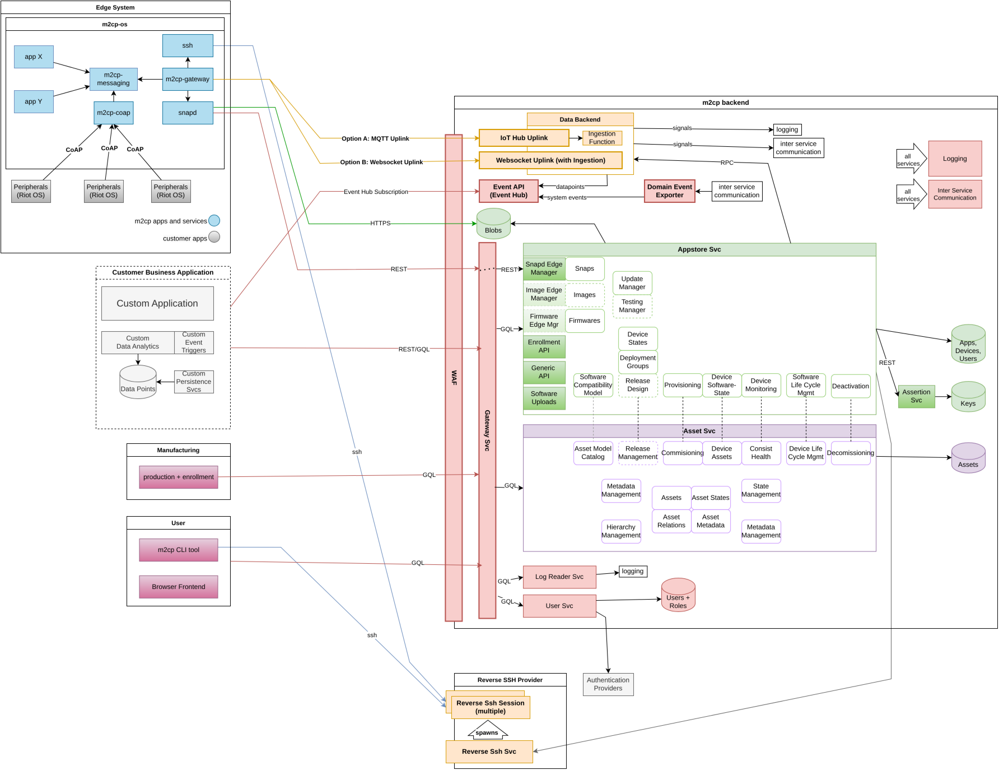
The diagram above illustrates how the Edge System, Customer Business Application, Manufacturing, and User connect to the M2CP Backend, either directly or via a Reverse SSH Provider. The following table provides brief descriptions of these components:
Component |
Definition |
|---|---|
Edge System |
The Edge System contains the Edge Device and the Real Time Devices they receive messages from. |
Customer Business Application |
The Customer Business Application entails the digital infrastructure the customer is working with. |
Manufacturing |
Devices are already included in the M2CP Backend during the production and enrollment process. |
User |
The User can interact with the M2CP backend making use of two alternative ways: The web-based Dashboard or the M2CP CLI. |
M2CP Backend |
This component encompasses all cloud-based backend services required for managing Devices, the app store, system-related assets, users, and logs. |
Reverse SSH-Provider |
This component entails the Reverse SSH-Service assuring a secure connection to the Appstore. |
2.1. Edge System
2.1.1. Edge Device
The Edge Device serves as a gateway between Real Time Devices that collect data and the cloud backend that offers functionalities to transform, monitor and analyze the data. It also provides messaging capabilities and software deployment over the air. Its Apps are also run in containerized fashion, meaning that each app brings all the libraries it needs and can only access its own storage, which makes updating a Device nicer. The operation system installed on the Device is the Edge OS.
Edge OS
Edge OS is a derivative of Canonical’s Ubuntu Core with a few modifications. Ubuntu Core is a containerized version of Ubuntu. Its key features include transactional updates from a centralized app store and strong security with applications running in a sandbox with minimal, strictly defined permissions. The System was modified to introduce additional security features on top of Ubuntu Core:
Communication to app store secured by Trusted Platform Module (TPM)
No open ports to the outside Additionally, a communication middleware is added to the system.
allows for self-hosted Appstore (Ubuntu Core is bound to Canonical’s store)
includes environment for M2CP Messaging
updates all installed packages in a transactional manner - failed updates are automatically rolled back to the last working version
allows for remote management of installed Apps
software and Device management via graphical dashboard
software and Device management via CLI tool m2cp.
To further understand technical details about Ubuntu Core and how it structures its disk partitions and boot process, please view the section below.
Ubuntu Core System Details
For more detailed information, see:
Partition |
Role |
Definition |
Components |
|---|---|---|---|
ubuntu-seed |
system-seed; |
contains the configuration for the first-stage/recovery boot loader and at least one recovery system. This is a set of snaps (base, kernel, gadget and Apps), together with a model assertion and snap assertions, that define the Device and from which the Device can be recovered or reinstalled. This is the only partition actually created by the auto installable image built by ubuntu-image. |
|
ubuntu-boot |
system-boot; |
Contains the second-state/run bootloader and unpacked kernel(s) to boot and with initramfs which decrypts the ubuntu-data and ubuntu-save partition. |
|
ubuntu-save |
system-save; |
Stores Device identity backup data and data to facilitate recovery or re-install. This partition is mandatory on encrypted systems where it should have a minimum size of approximately 20+MB to handle volume and file system creation. |
|
ubuntu-data |
system-data; |
Stores user and system data. This partition is often minimally sized in the image but extended during Device initialisation to use all the space available. |
Boot Sequence Ubuntu Core
uboot is launched from partition ubuntu-seed
uboot reads boot instructions from ubuntu-boot/uboot/ubuntu/boot.sel
uboot loads kernel, initrd, and Device tree from ubuntu-boot/uboot/ubuntu/
kernel boots
kernel starts _init _from initrd
init start snap-bootstrap
snap-bootstrap mounts all partitions
snap-bootstrap checks and mounts core snap as root file system
snap-bootstrap mounts the current kernel snap to access the included kernel modules
snap-bootstrap mounts writeable filesystem from ubuntu-data partition
systemd is started and launches all systemd services (that includes all snap services) in correct order
System Apps
System Apps are the applications needed to achieve the basic functionalities of the Edge Device, such as connecting to Real Time Devices, the cloud backend, and managing Apps. They are listed below:
App |
Description |
|---|---|
This App is an adapter between Real Time Devices and an Edge Device. It also manages uptime and executes shutdown when ordered to do so. |
|
This App serves as message broker transmitting all M2CP Messages within the Device. |
|
This App manages the initial Edge Device registration, has RPC endpoints to query Device information, controls software deploymant, manages snapd, acts as gateway of M2CP Messages and provides the Reverse SSH functionality. |
|
snapd |
This App serves to install and run apps on Devices. |
2.1.2. Real Time Devices
Real Time Devices that serve different functionalities and connect to Edge Devices through LAN. Their operating system is RIOT OS.
RIOT OS
RIOT OS is an open-source microcontroller operating system, designed to match the requirements of Internet of Things (IoT) Devices and other embedded Devices. These requirements include
very low memory footprint (on the order of a few kilobytes)
high energy efficiency
real-time capabilities
support for a wide range of low-power hardware
communication stacks for wireless and communication stacks for wired networks The firmware of the Real Time Devices can be easily updated over-the-air. A new firmware can be assigned using the Deployment Group management, which causes the firmware to be deployed via the Edge Device to the target Real Time Device. Thus, updating firmware is as easy as installing an app on a smartphone.
2.2. Cloud Backend
The cloud backend encompasses the App Store Service, Asset Service, User Service, Messaging System, Logging System, Firewall (WAF), Gateway, and the APIs. The System Components Diagram presents an abstract representation of the architecture, highlighting the various system components. A detailed description of the concrete implementation is provided in the table below, where the names and descriptions of the actual components are listed alongside their corresponding abstract representations in the diagram.
Name in Diagram |
Name in Azure |
Component type |
Comment |
|---|---|---|---|
Logging |
appi-as3-$project-as-$stage-$region |
Azure Application Insights with Workspace log |
|
Ingestion Function |
func-as3-$project-ingestion-$stage-$region |
Docker Container running as Azure Function |
Only if IoT-Hub is used |
Ingestion Function |
func-as3-$project-signallogger-$stage-$region |
Docker Container running as Azure Function |
Data Backend arrow with signals pointing to logging; Only if IoT-Hub is used |
Message Hub (IoT Hub, RabbitMQ, MQTT) |
iot-as3-$project-$stage-$region |
Azure IoT Hub |
SignalR Hub is the favoured solution |
Service Bus |
sbas3$project$stage$region |
Service Bus |
|
Service Bus |
ci-as3-$project-$stage-$region |
Rabbit MQ container running on Azure Container instance |
Container name: rabbitmq-as3-$project-$stage-$region; Only if public network access of backend components is disabled |
Assets |
sqldb-as3-$project-assetservice-$stage-$region |
MS SQL server database |
|
Apps, Devices, Users |
sqldb-as3-$project-appstore-$stage-$region |
MS SQL server database |
|
User + Roles |
sqldb-as3-$project-userservice-$stage-$region |
MS SQL server database |
|
Assets |
psqldb-as3-$project-assetservice-$stage-$region |
Postgres database |
Alternative for SQL Server database |
Apps, Devices, Users |
psqldb-as3-$project-appstore-$stage-$region |
Postgres database |
Alternative for SQL Server database |
User + Roles |
psqldb-as3-$project-userservice-$stage-$region |
Postgres database |
Alternative for SQL Server database |
Keys |
kv-as3-$project-wa-$stage-$region |
Azure key vault |
|
Blobs |
stas3$project$stage$region |
Blob storage on azure storage account |
|
Assertion Svc |
app-as3-$project-assertion-svc-$stage-$region |
Docker Container running on Azure App Service or Kubernetes resource |
|
Asset Svc |
app-as3-$project-asset-svc-$stage-$region |
Docker Container running on Azure App Service or Kubernetes resource |
|
Appstore Svc |
app-as3-$project-appstore-svc-$stage-$region |
Docker Container running on Azure App Service or Kubernetes resource |
|
Domain Events Exporter Service |
app-as-$project-domain-events-exporter-svc-$stage-$region |
Docker Container running on Azure App Service or Kubernetes resource |
Only required if SignalR-hub service instead of IoT-Hub |
Gateway Svc |
app-as3-$project-gateway-svc-$stage-$region |
Docker Container running on Azure App Service or Kubernetes resource |
|
Logreader Svc |
app-as3-$project-logreader-svc-$stage-$region |
Docker Container running on Azure App Service or Kubernetes resource |
|
Reverse Ssh Svc |
app-as3-$project-relay-ssh-svc-$stage-$region |
Docker Container running on Azure App Service or Kubernetes resource |
|
Snap Edge Manager |
app-as3-$project-snap-svc-$stage-$region |
Docker Container running on Azure App Service |
[Deprecated] |
SignalR Service |
app-as-$project-signalr-hub-$stage-$region |
Docker Container running on Azure App Service or Kubernetes resource |
|
User Svc |
app-as3-$project-user-svc-$stage-$region |
Docker Container running on Azure App Service or Kubernetes resource |
|
Customer Busines Application |
stapp-as3-$project-frontend-$stage-$region |
||
Authentication Providers |
Any Open ID Providers |
Technically 2 Auth Providers, ML!PA Azure AD and customers OpenID (-compatible) provider |
|
Reverse SSH session |
aci-reverse-ssh-$deviceSerial |
Azure container instance running SSH server |
One container created for each Device (on-demand) |
Event API |
ehns-as3-$project-$stage-$region |
Currently not implemented |
|
vnet-as3-$projec-webapps-$stage-$region |
Virtual network with up to 3 subnets |
Only if public network access of backend components is disabled |
|
pep-as3-$project-$resourceDescriptor-$stage-$region |
Private endpoints and corresponding dns entries |
Only if public network access of backend components is disabled |
|
func-as3-$project-updateContainer-$stage-$region |
Docker Container running as Azure Function |
Workarounnd to notify app service and functions that new container version is avalaible |
|
ehns-as3-$project-$stage-$region |
Eventhub namespace |
Just a technical necessity |
|
kv-as3-$project-us-$stage-$region |
Azure Key Vault |
Just a technical necessity for storing secrets |
|
kv-as3-$project-wa-$stage-$region |
Azure Key Vault |
Just a technical necessity for storing secrets |
|
asp-as3-$project-$resourceDescriptor-$stage-$region |
App Service plan for app services and functions |
[Deprecated Naming] Just a technical necessity |
|
asp-as-$project-webapps-$stage-$region-$counter |
App Service plan for app services and functions |
Just a technical necessity |
|
func-as3-$project-storagewriter-$stage-$region |
Docker Container running as Azure Function |
Just a technical necessity - writing eventhub messages to storage account |
2.2.1. Gateway Service
The Gateway Service is the primary entry point for all external requests to the cloud backend infrastructure. It acts as a reverse proxy, providing a unified interface for a collection of internal microservices. Its main purpose is to decouple the client-facing API from the internal service architecture, which simplifies client interactions and allows for a more flexible and scalable backend.
Purpose and Role
The Gateway Service handles several critical cross-cutting concerns, ensuring that requests are processed securely and efficiently before being routed to the appropriate downstream service.
Request Routing and GraphQL Schema Aggregation
Authentication and Token Exchange
Request Routing and GraphQL Schema Aggregation
The Gateway Service aggregates GraphQL schemas from multiple remote microservices using HotChocolate schema stitching. Remote schemas are added to the unified graph dynamically at runtime. Each remote schema endpoint is defined via environment variables following the pattern:
REMOTE_SCHEMA_[SCHEMA_NAME]
For example:
REMOTE_SCHEMA_USER_SVC_SCHEMAREMOTE_SCHEMA_APPSTORE_SVC_SCHEMA
This approach allows new services to be integrated into the GraphQL gateway without requiring code changes. Simply set the appropriate environment variable for the new service, and its schema will be included automatically in the aggregated graph.
REST API endpoints are explicitly defined within the Gateway Service. YARP reverse proxy is responsible for routing these REST requests to the appropriate downstream microservices based on the configured endpoint mappings. This setup ensures that all REST traffic is centrally managed and efficiently forwarded to the correct service.
Improvement Opportunity: One area for future enhancement is replacing static reverse proxy configuration with service discovery. By integrating service discovery, the Gateway Service could dynamically resolve and route requests to downstream microservices without requiring manual updates to proxy configuration. This would improve scalability, reduce operational overhead, and simplify the addition or removal of services in the backend architecture.
Authentication and Token Exchange:
Gateway acts as the first step of authentication and defense for the backend system.
External Token Validation: The gateway intercepts all incoming requests and inspects the Authorization header for a JSON Web Token (JWT). It validates this external token to ensure it was issued by a trusted authority, is not expired, and has not been tampered with. Security is a core function of the Gateway Service. It is the first line of defense for the backend system.
Token Exchange Process: Upon successful validation of the external token, the gateway initiates a token exchange process. It communicates with the User Service to generate a new, internal JWT. This internal token contains user session information and permissions that are understood and trusted by the other microservices within the system. The internal token is then attached to the request headers before it is forwarded to the downstream service.
Caching of Tokens: To optimize performance, the Gateway Service caches the internal JWT tokens. This caching mechanism reduces the frequency of token exchange requests to the User Service, thereby lowering latency and improving overall system responsiveness.
NOTE: Requests targeting snapd endpoints are routed directly to the Appstore Service by the gateway. For these specified REST endpoints, the gateway bypasses JWT token authentication, allowing the Appstore Service to authenticate device requests internally.
{kind=link}
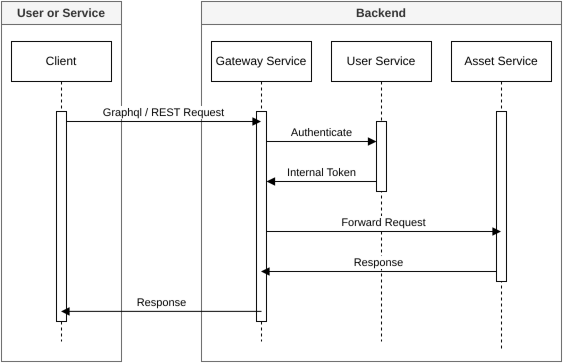
External Identity Provider Support
The Gateway Service supports a wide range of external identity providers based on OAuth2 standards. It is designed to allow the integration of multiple identity providers simultaneously, enabling flexible authentication scenarios for different user groups or organizations.
For authenticating external tokens, the gateway does not require client secrets. Instead, it validates tokens using the signing keys obtained from each provider’s .well-known/openid-configuration endpoint. These keys are automatically refreshed by a background job that re-fetches and updates them daily, ensuring seamless support for key rotation and maintaining secure token validation.
The Gateway Service uses a flexible environment variable pattern to configure external identity providers. Each provider and its options are defined using the following format:
IDENTITY_PROVIDERS:[Name]:[Option]
For example:
IDENTITY_PROVIDERS:Keycloak:ISSUERSIDENTITY_PROVIDERS:Keycloak:METADATA_ADDRESSIDENTITY_PROVIDERS:B2C:ISSUERSIDENTITY_PROVIDERS:B2C:METADATA_ADDRESS
Options available for each identity provider are listed in the table below:
Option |
Description |
|---|---|
ISSUERS * |
List of valid token issuers for the identity provider. |
AUDIENCES * |
List of accepted audiences for token validation. |
METADATA_ADDRESS * |
URL to the OpenID Connect metadata endpoint for key discovery and configuration. |
BYPASS_SSL_CERTIFICATE_VALIDATION |
If set to “true”, disables SSL certificate validation for metadata endpoint (not recommended for production). |
IMPLICIT_FLOW_ENABLED |
Enables or disables OAuth2 implicit flow for authentication. |
IMPLICIT_FLOW_CLIENT_ID |
Client ID used for implicit flow authentication. |
IMPLICIT_FLOW_SCOPE |
Scopes requested during implicit flow authentication. |
IMPLICIT_FLOW_REDIRECT_URL |
Redirect URL for the OAuth2 implicit flow. |
NOTE: IMPLICIT_FLOW options are used for web login by the m2cp CLI. The gateway supports only one active implicit flow identity provider at a time. The CLI tool does not interact directly with the identity provider; instead, the identity provider redirects the token to the gateway, which then provides the token to the client. Therefore, the following gateway endpoint must be included in the identity provider’s list of valid redirect URLs:
https://[gateway service]/auth/sessions/callback
{kind=link}
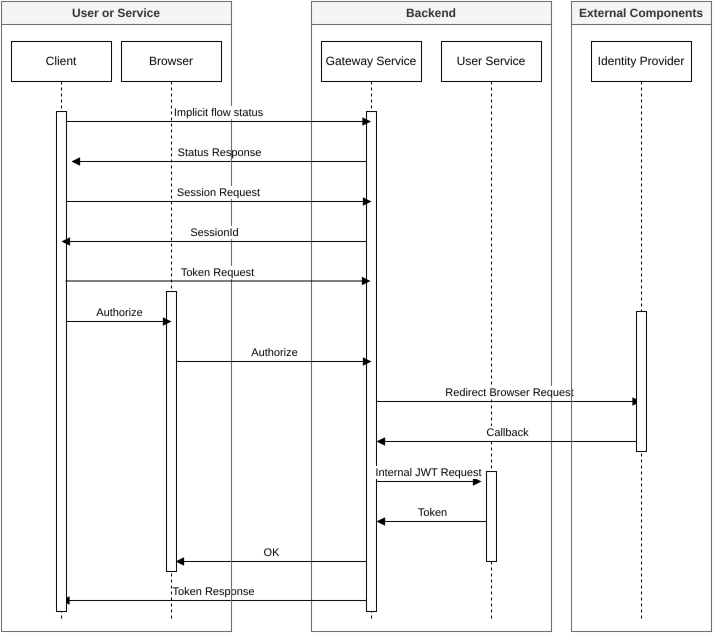
Performance
Async Processing: All request handling in the Gateway Service is implemented using asynchronous programming patterns, ensuring efficient use of system resources and high throughput under load.
Request Cancellation: The gateway monitors cancellation tokens for incoming requests, allowing it to promptly abort processing when clients disconnect or cancel requests, which helps conserve resources and improve responsiveness.
Efficient Memory Caching: Token caching is performed in-memory for maximum speed and minimal latency. The cache is designed to be as efficient as possible, reducing unnecessary calls to downstream services.
Token Exchange Locking: To prevent redundant token exchange requests to the User Service, the gateway uses locking mechanisms for each unique external token. This ensures that only one exchange operation is performed per token, even when multiple concurrent requests are received.
Concurrency Handling: The gateway is optimized for concurrent client requests. When the frontend application sends several parallel requests with the same authorization header (such as during page load), the locking and caching strategies ensure that only one token exchange occurs, and all requests benefit from the cached result.
Scalability
The Gateway Service is designed to be stateless, allowing multiple instances to run in parallel and scale horizontally. Each instance maintains its own in-memory cache for exchanged tokens, ensuring fast access and reducing dependency on external state.
For messaging, each running instance automatically creates its own message broker queues. These queues are ephemeral and are deleted 10 minutes after the instance shuts down, supporting dynamic scaling and resource efficiency.
Improvement Opportunity: Scalability can be further enhanced by adopting distributed caching solutions such as Redis. This would enable centralized token caching and state sharing across all gateway instances, improving cache consistency and supporting even larger scale deployments.
Security
The Gateway Service authenticates requests when an Authorization header is present. There is no additional configuration required to enforce authentication; all requests with an Authorization header are validated. Downstream services only accept the internal token generated by the User Service. Requests containing even a valid external JWT token are rejected by downstream services.
Only the User Service holds the signing private key for internal tokens. All other services validate internal tokens using the RSA public key, ensuring secure and centralized token management.
To protect browser-based requests, the gateway enforces CORS using the CLIENT_APP_CORS_ORIGINS environment variable. Multiple origins can be specified, separated by a semicolon (;).
Improvement Opportunity:
Introduce configuration options to disable the Swagger UI and GraphQL schema exposure at the gateway level. This would prevent endpoint discovery in production environments while maintaining API functionality.
Maintainability
Code Structure: The codebase follows best practices for Microsoft Dependency Injection and implements a vertical slice architecture. Request flow is managed through middleware components, promoting separation of concerns and ease of extension.
API Documentation: At the gateway level, REST endpoints are documented using Swagger. For GraphQL, the schema is exposed and interactively browsed via the Banana Cake Pop user interface.
Configuration Management: All required configuration is provided through environment variables. There is no reliance on settings.json or YAML files, as the product is deployed exclusively as Docker images.
Auditability
The Gateway Service integrates logging with Azure Application Insights and also outputs logs to the console. Each request is tracked using a Task-Id HTTP header, which is assigned by the gateway if not present in the incoming request. This Task-Id is propagated to downstream services, enabling end-to-end traceability across the ecosystem. The Task-Id is also handled by other components, such as the m2cp CLI tool, which sets the task id for each executed command.
Log Level Management:
The default log level filter is configurable via the APPLICATION_INSIGHTS_MINIMUM_LOG_LEVEL environment variable. Additionally, the log level can be changed at runtime using a GraphQL mutation, allowing super admins to temporarily increase log verbosity (e.g., to ‘Debug’ or ‘Trace’) for troubleshooting without restarting the service.
Example GraphQL mutation to change log level:
mutation {
updateTemporaryLogLevel(
temporaryLogLevel: {
durationMinutes: 10
minimumLogLevel: "Trace"
moduleNames: ["GatewaySvc", "UserSvc"]
}
) {
minimumLogLevel
moduleNames
expiresAt
}
}
This approach ensures comprehensive request tracking, flexible log management, and supports auditability across all major components.
Endpoints
The Gateway Service exposes the following endpoints:
Endpoint Type |
URL Format |
Description |
|---|---|---|
GraphQL |
|
Main GraphQL API endpoint |
Swagger UI |
|
Interactive REST API documentation |
Health Check |
|
Service health status endpoint |
Path Base Configuration:
The Gateway Service supports a configurable path base using the PATH_BASE environment variable. This is useful when hosting the gateway behind another proxy (e.g., nginx) that adds a URL segment. The path base ensures all endpoints, especially Swagger documentation JSON files, remain accessible via the browser.
PATH_BASE(default: empty, optional)
2.2.2. User Service
The User Service is the central user management system within the architecture. It is responsible for managing users, their permissions, and serves as the authoritative source for all existing tenants in the system. In addition to user and tenant management, the User Service plays a critical role in authentication: it generates and signs internal tokens during the token exchange process, as described in the Gateway Service section. This ensures secure, consistent identity and access management across all backend services.
Purpose and Role
The User Service is a foundational component responsible for identity and access management across the system. Its main roles include:
Tenant Management: Acts as the source of truth for all tenants in the system, supporting multi-tenancy scenarios and tenant-specific configurations.
User Management: Handles the creation, update, and deletion of user accounts, as well as management of user profiles and credentials.
Permission Management: Maintains and enforces user permissions and roles, ensuring that users have appropriate access to system resources.
Token Issuance and Validation: Generates and signs internal JWT tokens during the token exchange process, providing secure authentication for all backend services. Only the User Service holds the private signing key, while other services validate tokens using the public key.
Integration with Gateway Service: Works closely with the Gateway Service to authenticate users and authorize requests, ensuring that only valid, internal tokens are accepted by downstream services.
Tenant Management
The User Service manages all tenants in the system, ensuring each tenant has a unique name and alias. These identifiers are strictly enforced for uniqueness across the platform. Other services synchronize their tenant data with the User Service at startup, ensuring consistent and up-to-date tenant information in their own databases.
Improvement Opportunity:
Currently, tenant creation is performed using SQL commands during infrastructure initialization. A future enhancement is to provide features that allow system owners to add new tenants through the application and automatically synchronize tenant data across all services.
User Management
Each user belongs to a single tenant, and every user is identified by a unique email address across the entire system. Users do not have standard credentials; authentication is performed exclusively via an external identity provider. Each user may also have an SSH public key, which is optional and primarily used to support SSH-based authentication methods for secure access to the system.
Permission Management
The system uses a role-based access control (RBAC) model. Each user can be assigned one or more roles, which define their overall access level within the system. In addition to roles, the system uses the concept of “scopes” to represent fine-grained permissions. Each role consists of one or more scopes, with each scope specifying a particular permission or action the user is allowed to perform. In summary, a role is a group of scopes, and user permissions are determined by the combined scopes of all assigned roles.
Some roles are predefined by the system, but there is also the possibility for administrators to create new roles with customized sets of permissions (scopes) to meet specific requirements.
Token Issuance and Validation
After authenticating users via an external identity provider, the User Service verifies the existence of the user in the system. It then generates a JWT token that includes user information, session ID, authorized scopes, and other relevant claims. This token is signed using the service’s RSA private key. The following environment variables are used to configure the signing keys:
USER_SERVICE_SIGNING_PRIVATE_KEY— RSA private key for signing tokensUSER_SERVICE_SIGNING_PUBLIC_KEY— RSA public key for token validation by other services
This approach ensures that only the User Service can issue valid internal tokens, while all other services can verify their authenticity using the public key.
If the user does not exist in the User Service database, the user will be created automatically only if the environment variable IDENTITY_PROVIDERS:[Name]:AUTO_CREATE_USERS is set to true. This means the system allows authenticated users to log in, but any newly created user will have almost no permissions until an administrator assigns appropriate roles. This configuration is managed separately for each identity provider.
Integration with Gateway Service
The User Service integrates with the Gateway Service to provide secure authentication and authorization for all backend requests. When a user presents an external token (from an identity provider), the Gateway Service validates the token and then exchanges it for an internal JWT issued by the User Service.
Performance
The User Service follows similar performance principles as the Gateway Service. It uses in-memory caching for exchanged tokens to reduce database and processing load during authentication flows. Additionally, all relevant database tables are properly indexed to ensure efficient user lookups and permission checks, supporting high throughput and low latency for authentication and authorization operations.
Scalability
The User Service is stateless, allowing multiple instances to run in parallel and scale horizontally. All instances share the same database, which acts as the central source of truth for user and permission data. Communication between the Gateway Service and the User Service is handled via a message broker. When scaling out, each message from the broker is processed by only one User Service instance, ensuring efficient load distribution and avoiding duplicate processing.
{kind=link}
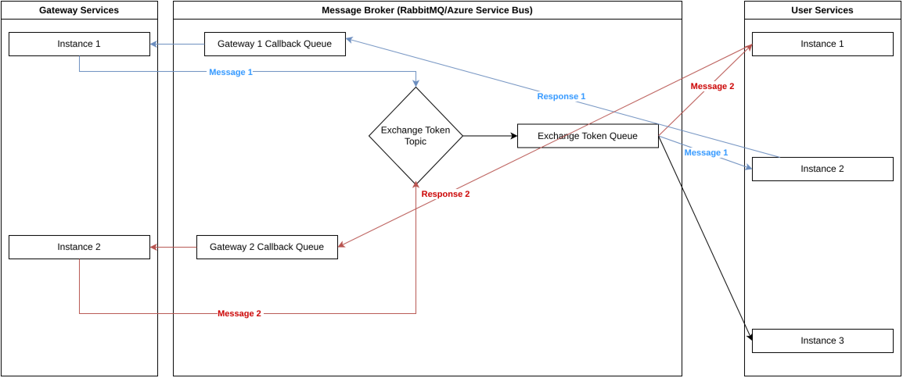
Security
The signing keys used for internal token generation are securely stored and protected in Azure Key Vault, ensuring that only the User Service can access the private key. Only internal tokens issued and signed by the User Service are accepted by other backend services; external tokens are not trusted beyond the gateway.
Improvement Opportunity:
Implement automated key rotation for internal token signing keys. This would enhance security by regularly updating the RSA key pair used for token issuance, minimizing the risk of key compromise and supporting best practices for cryptographic key management.
During the token exchange process, no actual tokens are stored in the database. Instead, only the SHA-384 hash of each token is saved to enable efficient mapping and lookup, further reducing the risk of sensitive data exposure.
For SSH login, a highly secure approach is implemented: no user credentials are stored in the database, only the SSH public key is associated with the user.
Data Models
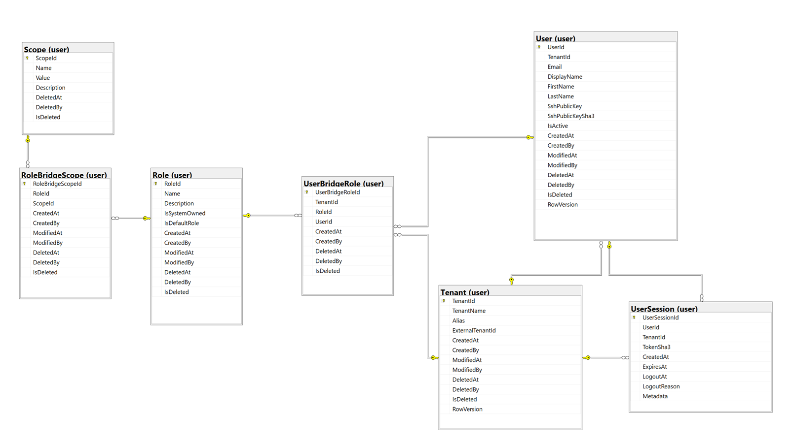
2.2.3. Log Service
The Log Service is responsible for retrieving log entries from the centralized log repository, such as Azure Application Insights Workspace. It provides a unified interface for querying and accessing logs generated by various services in the ecosystem. The Log Service is integrated with GraphQL, allowing clients to perform flexible and efficient log queries, filter by criteria such as time range, severity, or source, and retrieve relevant log data for monitoring, troubleshooting, and auditing purposes.
Purpose and Role
The Log Service is designed to retrieve logs from any readable log dataset within the ecosystem. Its primary responsibilities are:
Reading backend logs: Accessing and returning logs generated by backend services, typically stored in centralized repositories such as Azure Application Insights Workspace.
Reading device logs: Retrieving logs sent from devices, which are transmitted as signal messages and stored in the log repository.
By supporting both backend and device log retrieval, the Log Service provides a unified interface for monitoring, troubleshooting, and auditing activities across the entire system.
Improvement Opportunity: Currently, the Log Service supports Azure Application Insights by implementing a specific adapter that translates GraphQL queries to KQL (Kusto Query Language). Based on requirements, new adapters can be implemented to translate GraphQL queries to other query languages, enabling support for additional log storage backends.
Reading backend logs
Logs from all backend services, based on the configured log level, are collected in relevant datasets. In Azure, for example, these datasets include tables such as trace, request, exception, and others. The Log Service provides a GraphQL query interface to retrieve these logs:
logs(filters: { ... })
The filter input is defined as follows:
Property |
Description |
|---|---|
limit |
Maximum number of log entries to return. |
startDateTime |
Start of the time range for log entries. |
endDateTime |
End of the time range for log entries. |
includeTraces |
Include trace log entries (e.g., from the |
includeExceptions |
Include exception log entries (e.g., from the |
includeDependencies |
Include dependency log entries (e.g., external service calls). |
includeHealthChecks |
Include health check log entries. |
includeDeviceSignals |
Include device signal logs (logs sent as signal messages from devices). |
excludeEntityFrameworkLogs |
Exclude logs generated by Entity Framework. |
excludeLogsWithTaskId |
Exclude logs that have a TaskId assigned. |
excludeLogsWithEmptyTaskId |
Exclude logs where TaskId is empty or missing. |
excludeGraphQLLogs |
Exclude logs generated by GraphQL operations. |
taskId |
Filter logs by a specific TaskId. |
success |
Filter logs by success status (e.g., only successful or failed operations). |
operationNameFilter |
Filter logs by operation name (e.g., HTTP route, GraphQL operation). |
operationId |
Filter logs by a specific operation ID. |
operationParentId |
Filter logs by the parent operation ID. |
messageFilter |
Filter logs containing a specific message or substring. |
userId |
Filter logs by user ID. |
tenantId |
Filter logs by tenant ID. |
entryAssemblyNameFilter |
Filter logs by the entry assembly name (originating application/service). |
scopeFilter |
Filter logs by scope (custom application-defined context). |
minimumSeverityLevel |
Minimum severity level to include (e.g., Information, Warning, Error). |
searchString |
Free-text search across log entries. |
This flexible filtering allows precise retrieval of backend logs for monitoring, troubleshooting, and auditing.
Reading device logs
Device logs are sent as signal messages from edge devices and stored in the log repository. To retrieve these logs, the Log Service provides a dedicated GraphQL query:
edgeDeviceLogs(filter: { ... })
The filter input supports the following properties:
Property |
Description |
|---|---|
Limit |
Maximum number of device log entries to return. |
StartDateTime |
Start of the time range for device log entries. |
EndDateTime |
End of the time range for device log entries. |
TaskId |
Filter device logs by a specific TaskId. |
DeviceSerial |
Filter logs by the serial number of the edge device. |
SearchString |
Free-text search across device log entries. |
Origin |
Filter logs by the origin of the signal. |
Topic |
Filter logs by the signal topic. |
SignalType |
Filter logs by the type of signal message. |
This query enables targeted retrieval of device-generated logs, supporting monitoring, troubleshooting, and analysis of device activity within the system.
NOTE: In Azure, device signal messages are stored in the
customEventstable.
Performance
All Log Service methods are implemented asynchronously to ensure efficient resource usage and responsiveness. However, the performance of log retrieval is highly dependent on the configured limit and the underlying log provider. Querying logs over a wide time range, especially when using a search string, may result in slow responses and cannot be guaranteed to be efficient for all scenarios.
The efficiency of log queries also depends on the adapter responsible for translating GraphQL queries to the provider-specific query language (e.g., KQL for Azure). Well-optimized adapters can significantly improve query performance, but the overall speed is still constrained by the capabilities and limitations of the log storage backend.
Scalability
The Log Service is fully stateless and does not implement any caching. Each request is processed independently, and no state or cache is shared between instances. This design allows the Log Service to scale horizontally by simply adding more instances, ensuring consistent behavior and reliability regardless of the number of deployed service replicas.
Security
The Log Service exposes only GraphQL queries for log retrieval. All requests to the Log Service must be authenticated and authorized. Only users with the appropriate permissions to read logs are granted access. Authorization is enforced to ensure that sensitive log data is accessible exclusively to users with explicit log reading rights.
Only JWT tokens generated by the User Service are accepted for authentication and authorization. Tokens from other sources are not permitted.
2.2.4. Asset Service
The Asset Service is responsible for managing both physical and non-physical entities and equipment within the system. Its primary focus is on physical assets such as boards, sensors, devices, and systems, which are uniquely identified by hardware serial numbers. This service acts as the central registry for all assets, ensuring accurate tracking and management throughout their lifecycle.
A key feature of the Asset Service is the ability to define and maintain the hierarchy of asset types. This allows for flexible modeling of relationships between different asset categories, supporting complex structures such as systems composed of multiple devices or components.
The Asset Service also supports dynamic definition of physical attributes for each asset. Administrators can define custom attributes, assign measurement units to them, and set attribute values for individual equipment. This enables detailed and extensible asset descriptions, accommodating a wide range of use cases and asset types.
Improvement Opportunity: Currently, the Asset Service supports hierarchy for asset type levels. An area for enhancement is to introduce detailed configuration for asset models, enabling the enforcement of provisioning rules for specific hardware revisions. This would allow organizations to define and validate required attributes, constraints, and workflows for each asset model and revision, ensuring consistent and compliant asset onboarding and management.
Purpose and Role
The Asset Service is a core component responsible for managing both physical and non-physical assets within the system. Its primary focus is on physical entities such as boards, sensors, devices, and systems, each uniquely identified by hardware serial numbers. The service acts as the central registry for all assets, supporting their full lifecycle from manufacturing through operation.
Key responsibilities include:
Asset Management: Maintains a unique record for each device, enabling traceability and lifecycle management. Supports flexible modeling of relationships between asset types.
Asset Attributes: Allows dynamic definition of physical attributes (e.g., voltage, weight, location) and assignment of measurement units.
Manufacturing: Ensures that systems and their components are onboarded and tracked from the earliest stage.
Asset Management
The Asset Service provides robust support for registering and tracking physical devices using unique serial numbers. This process is built on a structured data model that ensures each device is uniquely identified, categorized, and associated with its model and type.
Key Concepts:
AssetType: Defines the category or class of an asset (e.g., board, sensor, device, system). Asset types are tenant-aware and support hierarchical organization, enabling flexible modeling of asset relationships.
AssetModel: Represents a specific model or revision of an asset type. Asset models include metadata such as name, revision, description, and ownership status. This allows the system to distinguish between different hardware or device versions.
Asset: Represents an individual physical or logical entity in the system. Each asset is uniquely identified by a serial number and is linked to an AssetModel and, by extension, an AssetType. Assets can also be organized hierarchically using the
ParentAssetIdproperty, supporting complex system structures.
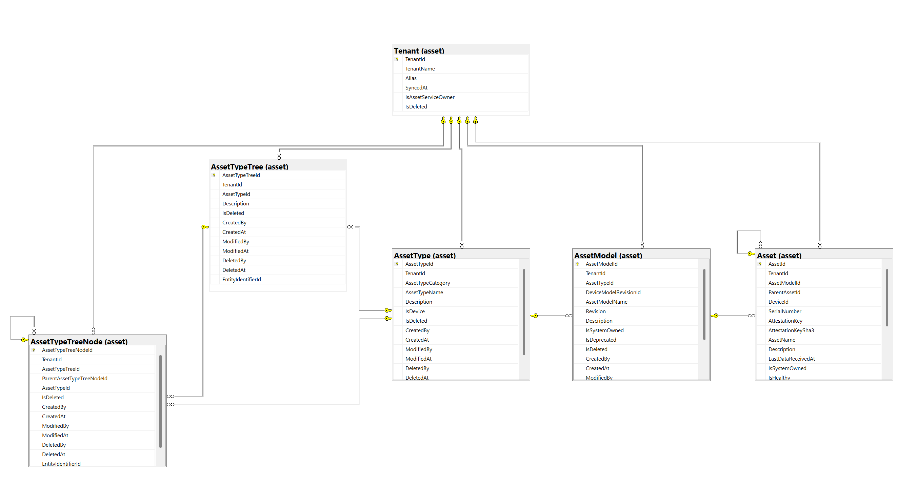
Asset Attributes
The Asset Service provides a flexible and extensible system for defining, organizing, and assigning attributes to assets. This enables dynamic modeling of physical characteristics, configuration parameters, and metadata for any asset type or model.
Key Concepts:
AssetAttributeSet: A logical grouping of asset attributes, allowing related attributes to be managed together (e.g., “Electrical Properties”, “Physical Dimensions”). Each set is tenant-scoped and can be described and versioned.
AssetAttribute: Defines a single attribute (e.g., “Voltage”, “Weight”, “Location”) within a set. Each attribute specifies its name, description, data type, unit, language, and whether it is required or deprecated.
AssetAttributeDataType: Specifies the data type for an attribute (e.g., integer, decimal, string, boolean), ensuring correct value validation and representation.
AssetAttributeUnit: Defines the measurement unit for an attribute (e.g., “Volt”, “kg”, “meter”), including its name, symbol, and measurement category. Units can be marked as base units for conversion and normalization.
AssetAttributeModelDefaultValue: Allows asset models to define default values for attributes, as well as whether the attribute is required for that model. This supports model-specific configuration and validation.
AssetAttributeValue: Stores the actual value of an attribute for a specific asset instance. Values are linked to both the asset and the attribute, and can include a normalized base unit value for consistent processing and reporting.
How it works:
Define Attribute Sets and Attributes: Administrators create attribute sets and define individual attributes, specifying their data types and units.
Assign Attributes to Asset Models: Asset models can reference attribute sets and define default values or requirements for each attribute.
Set Attribute Values for Assets: When an asset is registered or updated, attribute values are assigned and stored, supporting both raw and normalized (base unit) representations.
Localization and Versioning: Attributes can be localized using language codes and deprecated as needed, supporting evolving requirements and internationalization.
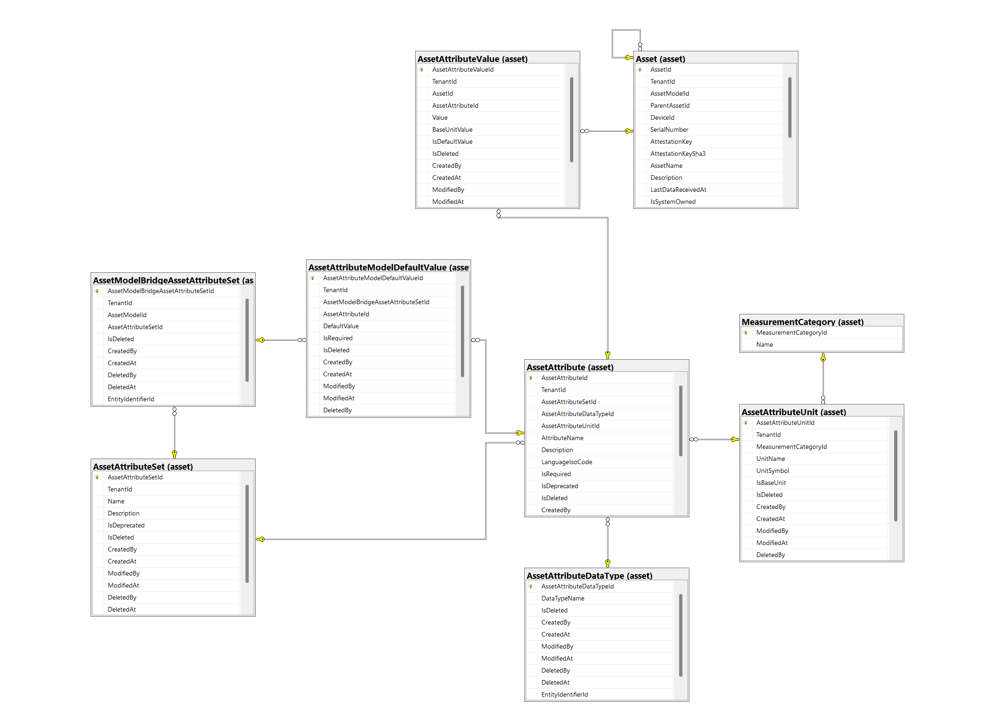
This attribute system enables detailed, dynamic, and tenant-aware asset descriptions, supporting a wide range of use cases from simple device metadata to complex engineering parameters.
Manufacturing
In the Asset Service, a “system” is defined as a logical group of components that are connected together to represent a unit of work. This typically includes an Edge Device and its associated Real Time Devices, forming a complete operational entity.
System Asset Type and Model:
The asset type
systemis pre-seeded in the database and serves as the root for manufacturing groupings.For each manufacturing set of components, an asset model of type
systemmust be defined. This model describes the specific configuration or revision of the system being produced.Asset hierarchy (parent-child relationships) should be established, with the system as the parent and all child devices (Edge Devices and Real Time Devices) as nested assets. (Note: Hierarchy validation is not fully enforced at this time.)
Registration Workflow:
During manufacturing or assembly, the installation station uses either a GraphQL mutation or the
m2cpCLI to create a new asset of typesystem. This asset acts as the parent for all related devices.Child assets are created for each Edge Device and Real Time Device, linked under the system asset.
Real Time Devices are registered using their hardware serial number.
Edge Devices are registered using their attestation key, which represents the device’s TPM public key.
Provisioning and Security:
The serial numbers (for Real Time Devices) and attestation keys (for Edge Devices) are critical identifiers. These values are later used during device registration in the App Store to ensure that only physically provisioned devices are onboarded and managed.
This approach ensures that every manufactured system and its components are uniquely registered, traceable, and securely provisioned before being activated in the broader ecosystem.
For more information, read the m2cp documentation regarding device life cycles.
System Asset Provisioning (High-Level Overview)
The provisioning process for a system asset in manufacturing is orchestrated by the ProvisionSystemAsset feature. At a very high level, the workflow is as follows:
Step |
Description |
|---|---|
Input Validation |
Ensures required fields (tenant, system model, devices) are present and valid. |
Tenant & Model Lookup |
Confirms the tenant and system asset model exist in the database. |
Hierarchy Setup |
Creates a new system asset (parent) if it does not already exist. |
Device Validation |
Validates each device (serial, attestation key, uniqueness, type correctness, etc.). |
Model Synchronization |
Ensures all device models exist, creating them if necessary (syncs with AppStore if needed). |
Asset Creation |
Creates child assets for each device (Edge/Realtime), linking them to the system asset. |
Persistence |
Saves all new assets and relationships to the database. |
Result |
Returns the newly provisioned system asset with its nested device assets. |
Edge Devices require both a serial number and an attestation key (TPM public key).
Realtime Devices require only a serial number.
The process enforces uniqueness and correct parent-child relationships.
The provisioning can be triggered via GraphQL mutation or the m2cp CLI.
This high-level flow ensures that every system and its components are consistently and securely registered in the asset management system.
Performance, Scalability, Security, Maintainability, and Auditability
The Asset Service adopts the same core technologies and architectural approaches for performance, scalability, security, maintainability, and auditability as all backend services in the ecosystem. This ensures consistency, reliability, and ease of integration across the platform.
Performance: Asynchronous processing, efficient database access, and optimized resource usage are standard. The service is designed to handle high-throughput scenarios and concurrent requests efficiently.
Scalability: The service is stateless and supports horizontal scaling. Multiple instances can be deployed in parallel, leveraging cloud-native infrastructure for elastic scaling.
Security: Authentication and authorization are enforced using JWT tokens issued by the User Service. Only authorized users can access or modify asset data, and all sensitive operations are protected.
Maintainability: The codebase follows best practices such as dependency injection, modular design, and clear separation of concerns. Configuration is managed via environment variables, and the service is delivered as a containerized application.
Auditability: Comprehensive logging and request tracking are implemented, supporting end-to-end traceability. Audit logs are integrated with centralized logging solutions for monitoring and compliance.
For more detailed explanations and implementation specifics, refer to the corresponding sections in the Gateway Service and User Service documentation.
Data Models
AssetType
Represents a reusable category of assets (e.g., generic asset, edge device, realtime device) within or across tenants, defining how assets are classified and used to build hierarchies and models.
Property |
Type |
Description |
|---|---|---|
|
|
Unique identifier of the asset type. |
|
|
Optional tenant identifier; |
|
|
High-level category of the asset type, e.g. whether it represents a generic asset, an edge device, or a realtime device. |
|
|
Human-readable name of the asset type (used in UI, configuration and manufacturing flows). |
|
|
Optional free-text description explaining the purpose or semantics of this asset type. |
|
|
Obsolete. Previously indicated whether the type represents a device; use |
|
|
Identifier of the user or process that created the asset type. |
|
|
Timestamp when the asset type was created. |
|
|
Identifier of the user or process that last modified the asset type. |
|
|
Timestamp when the asset type was last modified. |
Method |
URL |
Description |
|---|---|---|
GET |
|
Returns details of a single asset type by its identifier. |
GET |
|
Returns a list of asset types, optionally filtered. |
AssetModel
Represents a reusable model definition for assets (e.g., specific board / device / system variants) that can be shared across tenants or owned by the platform. Asset models are used to group concrete assets by hardware / configuration, revision, and type, and to attach attribute sets for provisioning and manufacturing.
Property |
Type |
Description |
|---|---|---|
|
|
Unique identifier of the asset model in the API contract (maps to |
|
|
Optional tenant identifier; |
|
|
Identifier of the |
|
|
(deprecated) Obsolete link to a device model revision; no longer used. This field will be removed in a future API version. |
|
|
Optional numeric revision of the asset model, used to distinguish different hardware or configuration versions. |
|
|
Human-readable name of the asset model (used in UI, manufacturing, and configuration flows). |
|
|
Optional free-text description explaining the purpose or characteristics of this asset model. |
|
|
(deprecated) Obsolete deprecation flag for the model. Superseded by internal domain logic and not used for new features. This field will be removed in a future API version. |
|
|
Indicates whether the asset model is owned/managed by the platform itself rather than by a customer tenant. |
|
|
Identifier of the user or process that created the asset model. |
|
|
Timestamp when the asset model was created. |
|
|
Identifier of the user or process that last modified the asset model. |
|
|
Timestamp when the asset model was last modified. |
Method |
URL |
Description |
|---|---|---|
GET |
|
Returns details of a single asset model by its identifier. |
GET |
|
Returns a list of asset models, optionally filtered. |
Asset
Represents a single physical or logical asset (e.g., edge device, sensor, system) within a tenant, linked to an AssetModel, with optional hierarchy (ParentAsset) and device bindings (DeviceId).
Property |
Type |
Description |
|---|---|---|
|
|
Unique identifier of the asset in the API contract (maps to |
|
|
Identifier of the tenant that owns this asset. |
|
|
Identifier of the asset model that describes the hardware / configuration of this asset. |
|
|
Optional identifier of the parent asset when this asset is part of a hierarchical system. |
|
|
Optional identifier of the associated device record when the asset is bound to a backend device. |
|
|
Hardware serial number of the asset as visible on the device/board label. |
|
|
Optional TPM attestation key used to securely bind edge devices during provisioning. |
|
|
Optional microcontroller ID for realtime or embedded devices. |
|
|
Human-readable name of the asset used in UIs and reports. |
|
|
Optional free-text description providing additional context about the asset. |
|
|
Optional health flag indicating whether the asset is considered healthy ( |
|
|
Indicates whether the asset is owned/managed by the platform itself rather than by a customer tenant. |
|
|
Timestamp of the last telemetry or data point received from this asset. |
|
|
Identifier of the user or process that created the asset record. |
|
|
Timestamp when the asset record was created. |
|
|
Identifier of the user or process that last modified the asset record. |
|
|
Timestamp when the asset record was last modified. |
Method |
URL |
Description |
|---|---|---|
GET |
|
Returns details of a single asset by its identifier. |
GET |
|
Returns a list of assets, optionally filtered. |
MeasurementCategory
Represents a measurement category (such as mass, length, voltage, or temperature) used to group and classify compatible units for asset attributes.
Property |
Type |
Description |
|---|---|---|
|
|
Unique identifier of the measurement category in the API contract (maps to |
|
|
Short, non‑Unicode name of the measurement category (e.g., |
Method |
URL |
Description |
|---|---|---|
GET |
|
Returns details of a single measurement category by its identifier. |
GET |
|
Returns a list of measurement categories, optionally filtered. |
AssetAttributeUnit
Represents a unit of measurement (e.g., Celsius, kg, m, kWh) within a specific measurement category, used to define how asset attribute values are stored, displayed, and normalized.
Property |
Type |
Description |
|---|---|---|
|
|
Unique identifier of the asset attribute unit in the API contract (maps to |
|
|
(deprecated) Obsolete tenant identifier; |
|
|
Identifier of the |
|
|
Human-readable name of the unit (e.g., |
|
|
Optional unit symbol shown in UIs or exports (e.g., |
|
|
Indicates whether this unit is the base unit for its measurement category and used as the normalization target for conversions. |
|
|
Identifier of the user or process that created the unit definition. |
|
|
Timestamp when the unit definition was created. |
|
|
Identifier of the user or process that last modified the unit definition. |
|
|
Timestamp when the unit definition was last modified. |
Method |
URL |
Description |
|---|---|---|
GET |
|
Returns details of a single asset attribute unit by its identifier. |
GET |
|
Returns a list of asset attribute units, optionally filtered. |
AssetAttributeDataType
Represents the logical data type of an asset attribute (e.g., string, GUID, boolean, integer, float, date, datetime), used to drive validation, storage, and UI representation.
Property |
Type |
Description |
|---|---|---|
|
|
Unique identifier of the asset attribute data type (maps to |
|
|
Name of the data type (e.g., |
|
|
Identifier of the user or process that created the data type definition. |
|
|
Timestamp when the data type definition was created. |
|
|
Identifier of the user or process that last modified the data type definition. |
|
|
Timestamp when the data type definition was last modified. |
Method |
URL |
Description |
|---|---|---|
GET |
|
Returns details of a single asset attribute data type by its identifier. |
GET |
|
Returns a list of asset attribute data types, optionally filtered. |
AssetAttributeSet
Represents a tenant-scoped logical grouping of asset attributes (e.g., “Electrical Properties”, “Physical Dimensions”) that can be attached to asset models and reused across assets.
Property |
Type |
Description |
|---|---|---|
|
|
Unique identifier of the asset attribute set (maps to |
|
|
Identifier of the tenant that owns this attribute set. |
|
|
Human-readable name of the attribute set (e.g., “Electrical Properties”), used in UI and configuration. |
|
|
Optional free-text description explaining the purpose or contents of the attribute set. |
|
|
Indicates whether this attribute set is deprecated and should not be used for new models. |
|
|
Identifier of the user or process that created the attribute set. |
|
|
Timestamp when the attribute set was created. |
|
|
Identifier of the user or process that last modified the attribute set. |
|
|
Timestamp when the attribute set was last modified. |
Method |
URL |
Description |
|---|---|---|
GET |
|
Returns details of a single asset attribute set by its identifier. |
GET |
|
Returns a list of asset attribute sets, optionally filtered. |
AssetAttribute
Represents a tenant-bound definition of a single asset attribute (e.g., “Voltage”, “Weight”, “Location”), including its data type, unit, and localization, used within an AssetAttributeSet.
Property |
Type |
Description |
|---|---|---|
|
|
Unique identifier of the asset attribute (maps to |
|
|
Identifier of the tenant that owns this attribute definition. |
|
|
Identifier of the |
|
|
Identifier of the |
|
|
Identifier of the |
|
|
Human-readable name of the attribute (e.g., |
|
|
Optional free-text description explaining the meaning or usage of the attribute. |
|
|
Optional ISO language code (default |
|
|
Indicates whether a value for this attribute is required at the asset/model level. |
|
|
Indicates whether this attribute definition is deprecated and should not be used for new models or assets. |
|
|
Identifier of the user or process that created the attribute definition. |
|
|
Timestamp when the attribute definition was created. |
|
|
Identifier of the user or process that last modified the attribute definition. |
|
|
Timestamp when the attribute definition was last modified. |
Method |
URL |
Description |
|---|---|---|
GET |
|
Returns details of a single asset attribute by its identifier. |
GET |
|
Returns a list of asset attributes, optionally filtered. |
AssetAttributeValue
Represents the concrete value of an asset attribute for a specific asset (instance-level data), including an optional normalized base-unit representation.
Property |
Type |
Description |
|---|---|---|
|
|
Unique identifier of the asset attribute value (maps to |
|
|
Identifier of the tenant that owns this attribute value. |
|
|
Identifier of the |
|
|
Identifier of the |
|
|
Raw value of the attribute for the given asset, serialized as a string based on the attribute’s data type. |
|
|
Indicates whether this value is the model-defined default rather than a user- or system-overridden value. |
|
|
Identifier of the user or process that created this attribute value. |
|
|
Timestamp when this attribute value was created. |
|
|
Identifier of the user or process that last modified this attribute value. |
|
|
Timestamp when this attribute value was last modified. |
Method |
URL |
Description |
|---|---|---|
GET |
|
Returns details of a single asset attribute value by its identifier. |
GET |
|
Returns a list of asset attribute values, optionally filtered. |
AssetModelBridgeAssetAttributeSet
Represents a tenant-scoped link between an AssetModel and an AssetAttributeSet, allowing a specific model to use a given group of attributes and to define model-level default values and requirements via AssetAttributeModelDefaultValue.
Property |
Type |
Description |
|---|---|---|
|
|
Unique identifier of the bridge record (maps to |
|
|
Identifier of the tenant that owns this model-to-attribute-set association. |
|
|
Identifier of the |
|
|
Identifier of the |
|
|
Identifier of the user or process that created this bridge entry. |
|
|
Timestamp when this bridge entry was created. |
Method |
URL |
Description |
|---|---|---|
GET |
|
Returns details of a single model–attribute-set bridge by its identifier. |
GET |
|
Returns a list of model–attribute-set bridges, optionally filtered. |
2.2.5. SignalR Hub Service
The SignalR Hub Service provides real-time, bidirectional communication between devices and the cloud backend using WebSockets. While the ecosystem was originally designed to work with Azure IoT Hub, the SignalR Hub Service was introduced to support scenarios where direct WebSocket communication is required for efficient, low-latency messaging.
Purpose and Role
WebSocket Endpoint: Acts as a central WebSocket endpoint for both device-to-cloud and cloud-to-device communication, enabling real-time data exchange.
Bidirectional Communication: Supports two-way messaging, allowing devices to send telemetry, status, or events to the cloud, and enabling the cloud to push commands or updates back to devices.
Integrated with App Store Service: The SignalR Hub Service is integrated with the App Store Service and the broader ecosystem infrastructure to achieve better performance and reliability across the entire system.
Integration with Ingestion Function: The ingestion function is integrated with the SignalR Hub Service to parse incoming device messages and publish the parsed data to the event hub or other messaging systems for further processing and analytics.
Alternative to IoT Hub: Complements or replaces Azure IoT Hub in scenarios where direct WebSocket connectivity is preferred or required.
WebSocket Endpoint
Acts as a central WebSocket endpoint for both device-to-cloud and cloud-to-device communication, enabling real-time data exchange. WebSockets provide a persistent, full-duplex connection, making them ideal for scenarios that require low-latency, bidirectional messaging between devices and backend services. This approach is essential for IoT and edge scenarios where timely delivery of telemetry, commands, and status updates is critical.
The SignalR library is used to implement this WebSocket endpoint. SignalR was chosen because it abstracts the complexities of managing WebSocket connections, automatically falls back to other real-time transports if WebSockets are not available, and provides a scalable, robust framework for handling large numbers of concurrent connections. Key benefits of SignalR include:
Automatic Transport Negotiation: Seamlessly uses WebSockets when available, with fallback to Server-Sent Events or Long Polling as needed.
Scalability: Supports horizontal scaling and integration with cloud services such as Azure SignalR Service.
Simplified API: Offers a high-level API for sending and receiving messages, managing groups, and handling connection events.
Reliability: Handles connection management, reconnections, and error handling, reducing the operational burden on developers.
Integration: Easily integrates with .NET backend services and the broader ecosystem infrastructure.
{kind=link}
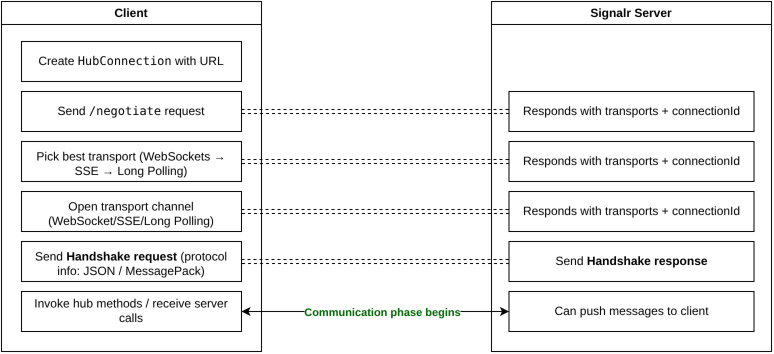
Bidirectional Communication
Devices send two main types of messages to the cloud:
Data messages (telemetries): These include sensor readings, status updates, and other operational data.
Signal messages (device logs): These are log entries or diagnostic information sent from devices for monitoring and troubleshooting.
Backend services can also initiate communication by sending RPC (Commands) to devices. These commands are delivered in real time, and the results or responses from the devices are routed back to the App Store Service via the message broker. This architecture enables efficient, low-latency, two-way communication between devices and the cloud backend.
{kind=link}
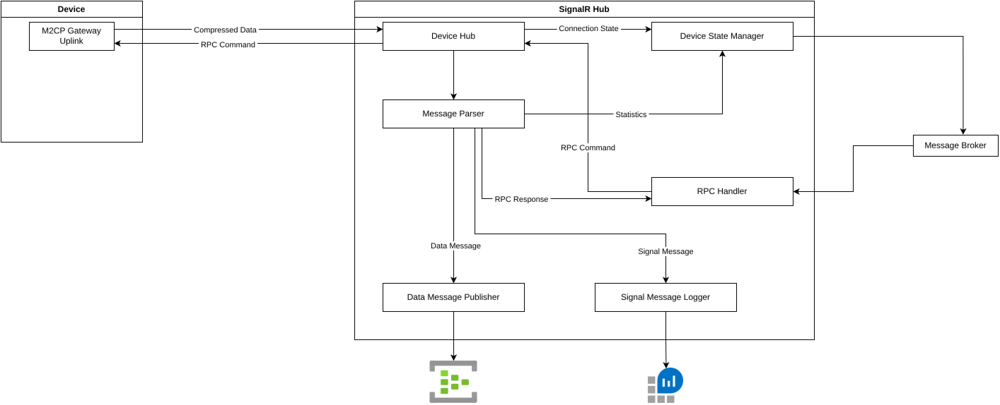
Integrated with App Store Service
The SignalR Hub is designed to leverage the ecosystem infrastructure, including the message broker, for efficient cross-service communication. It uses the device signing public key (configured via the environment variable DEVICE_TOKEN_SIGNING_PUBLIC_KEY) to validate connection strings generated by the App Store Service, ensuring secure device authentication and connectivity.
Additionally, the SignalR Hub periodically notifies the App Store Service about active device connections, total received messages, and total received bytes for each device. This telemetry enables the App Store and clients to access and track real-time connection status and usage metrics, supporting monitoring, diagnostics, and operational transparency across the platform.
Alternative to IoT Hub
The App Store supports both Azure IoT Hub and SignalR Hub as uplink options, allowing devices to use either or both, depending on their configuration. Based on the snaps installed on the device, the App Store provides the relevant connection string and endpoint for the selected uplink protocol. This design offers flexibility and makes it optional for each device to choose its preferred communication method.
Newer versions of the m2cp gateway default to using SignalR Hub as the uplink, but IoT Hub remains supported for compatibility. There is also an opportunity to extend this approach by adding support for additional protocols as uplinks in the future, based on evolving requirements.
Performance
The SignalR Hub Service is optimized for low-latency, real-time communication between devices and the cloud backend. By leveraging persistent WebSocket connections and integrating the ingestion function directly into the service, it minimizes message processing delays and provides immediate feedback to devices. This architecture reduces round-trip times compared to traditional IoT Hub setups, where multiple hops and external processing are required. The result is faster message delivery, improved error handling, and a more responsive experience for both devices and backend services.
NOTE:
The number of concurrent connections and message parsing throughput is highly dependent on the resources (CPU, memory) allocated to the application. With only a single or dual CPU core/thread, it is not realistic to expect millions of messages to be processed per second. However, the service is optimized for high throughput by leveraging async/await patterns throughout the implementation.
All collections used in the service are concurrent collections, utilizing low-level interlocks to achieve thread-safe and highly concurrent processing with minimal latency.
Scalability
Scalability is a core consideration in the design of the SignalR Hub Service. The service is stateless, allowing multiple instances to run in parallel and scale horizontally. Each device connects to only one uplink at a time, so each SignalR Hub instance independently manages its own set of device connections and maintains knowledge of which devices are online.
The message broker is central to scalable RPC command delivery. When the App Store needs to send an RPC command to a device, it publishes the message to a shared topic. All SignalR Hub instances subscribe to this topic. Only the instance with an active connection to the target device processes and delivers the command; other instances simply ignore the message.
For RPC responses, each App Store instance provides a unique callback queue. The responsible SignalR Hub instance publishes the RPC response to the specific callback queue from which the original RPC was sent, ensuring correct routing and delivery of responses in a distributed environment.
NOTE:
Scalability in this architecture is not limited to the SignalR Hub Service. Both the App Store and SignalR Hub can be independently scaled out to handle increased load. This dual-side scaling ensures that the system can efficiently manage high volumes of device connections, RPC commands, and message throughput across the entire communication pipeline.
{kind=link}
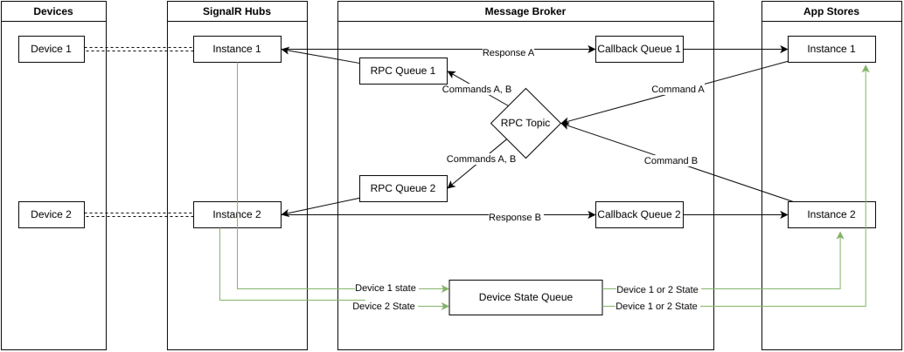
This architecture enables efficient load distribution, seamless horizontal scaling, and reliable message delivery without requiring centralized connection tracking.
Security
In contrast to Azure IoT Hub, where device credentials are managed and stored in the Azure portal and can be retrieved by backend services via the Azure SDK, the SignalR Hub approach eliminates the need for any stored secrets within the hub itself. Instead, device authentication and authorization are handled entirely by the App Store Service.
After a device is authenticated by backend services, the App Store generates and signs a token for the device, embedding an expiration time. This token is then provided to the device as part of the connection URL (included in the query string). The SignalR Hub validates this token on connection, ensuring that the device is registered, verified, and authorized to communicate with the cloud backend.
This design guarantees that only devices known to and authenticated by the App Store can establish a connection and send messages, providing a secure, stateless, and scalable authentication mechanism without the risk of credential leakage from the hub.
Improvement Opportunity:
Currently, the device connection token includes only the device serial number and expiration time, signed with a private key and embedded signature. In the future, this can be enhanced to use a full JWT token format, including additional claims such as device ID, tenant ID, deployment group ID, and more. This would enable richer context for authentication and authorization, and help avoid additional data lookups for device mapping and validation.
Also, as the parser is integrated into the SignalR Hub, all messages are received in batches and compressed using a specific algorithm. Upon receipt, the SignalR Hub immediately verifies that each message was produced by the correct device by checking the first bytes of the binary payload. This ensures that only valid streams are processed and prevents handling of malformed or unauthorized message streams.
Maintainability
The SignalR Hub Service is designed with maintainability as a core principle. It follows Microsoft best practices for dependency injection, ensuring that all components are loosely coupled and easily testable. The implementation adheres to SOLID principles and enforces clear separation of concerns, resulting in a modular and component-based architecture.
Each internal feature is encapsulated behind interfaces and adapters, making it straightforward to replace or extend individual components. For example, switching from one messaging system (such as Event Hub) to another only requires implementing a new adapter that conforms to the standard interfaces—no changes to the core logic are necessary. This approach enables rapid adaptation to new requirements and simplifies ongoing maintenance and enhancements.
Auditability
Like all other services in the ecosystem, the SignalR Hub uses a common logging framework built as a wrapper over Microsoft.Extensions.Logging, ensuring consistent log structure and behavior across services. This enables unified log aggregation, monitoring, and traceability throughout the platform.
The SignalR Hub also exposes a health endpoint, allowing external systems to check the health status of the service for operational monitoring and alerting.
Additionally, each instance of the SignalR Hub maintains an in-memory concurrent dictionary to track monitoring information about device connections. This includes statistics such as active connections, message counts, and total bytes processed. These metrics are periodically synchronized with the App Store Service, with the reporting interval configurable via the DEVICE_STATUS_REPORTER_INTERVAL (in seconds) environment variable.
Improvement Opportunity:
The connection metrics synchronized with the App Store are reliable as long as the SignalR Hub instance remains running and devices are able to reconnect after disconnection. In the rare scenario where the SignalR Hub is restarted at the same time a device’s battery drops and the device stops attempting to reconnect, the App Store may incorrectly display the device as still connected because it relies on the last synchronization message. The likelihood of this scenario is extremely low, as devices are designed to retry connections automatically.
2.2.6. Domain Event Exporter Service
The Domain Event Exporter Service is a specialized component within the ecosystem responsible for transferring and transforming domain events from the internal message broker to Azure Event Hub. This enables seamless integration with customer business applications and external analytics platforms.
Purpose and Role
Event Bridging: Listens to domain events published by backend services on the message broker (e.g., Service Bus, RabbitMQ).
Transformation: Optionally transforms or enriches event payloads to match the schema or requirements of downstream consumers.
Export to Azure Event Hub: Publishes the processed events to Azure Event Hub, making them accessible for customer business applications, data pipelines, or third-party integrations.
The backend service entities that need to be published and notified by the Domain Event Exporter Service must be marked with a specific attribute in the source code:
[GenericDomainEvent("AppRevision")]
public class AppRevision
{
// Properties
}
A DbContext interceptor is implemented to inspect the DbContext change tracker before saving data to the database in each service or module. When it detects an entity marked with the GenericDomainEvent attribute, it adds a generic domain event to the outbox table as part of the same transaction that saves the entity.
A separate background job is responsible for publishing these domain events from the outbox table to the message broker, making them available for transformation and export to Azure Event Hub by the Domain Event Exporter Service.
{kind=link}
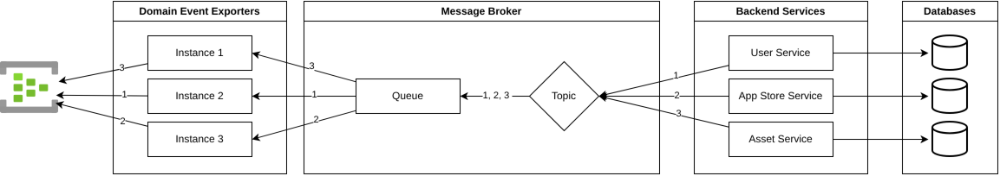
Performance
The Domain Event Exporter Service is optimized for high-throughput event processing. It reads change messages from the message broker in bulk, using a prefetch count of 1000 and processing up to 400 messages concurrently. Events are published to Azure Event Hub in batches, which minimizes network overhead and maximizes throughput. This configuration enables the service to efficiently handle large volumes of domain events with low latency, supporting real-time integration scenarios for customer business applications.
Scalability
The Domain Event Exporter Service is fully stateless and does not rely on any external resources such as databases or caches. This design allows multiple instances of the service to be deployed and scaled out horizontally as needed. All instances consume messages from a single queue, ensuring that each event message is processed and published to the target (Azure Event Hub) exactly once. This approach guarantees reliable, distributed processing and efficient scaling without risk of duplicate event delivery.
Security
The Domain Event Exporter Service does not expose any external endpoints except for a health endpoint, and it does not provide any REST API or GraphQL operations. This minimizes the attack surface and reduces potential security risks. All sensitive configuration values, such as connection strings and credentials, are securely managed and protected using Azure Key Vault.
2.2.7. App Store Service
The App Store Service is a core backend component responsible for comprehensive management of IoT devices—including both Edge Devices and Real Time Devices—as well as the software (apps) deployed to them. Its architecture is designed to be highly flexible and extensible, supporting not only current device and app types but also future additions without requiring structural changes.
Purpose and Role
Device and Software Management
Generalized Data Model:
All device and app definitions in the database are fully generalized and dynamic. This allows the system to support new types of devices or apps as they are introduced, without schema changes or code modifications. Each device or app type can have its own additional metadata, but the core management processes remain consistent.
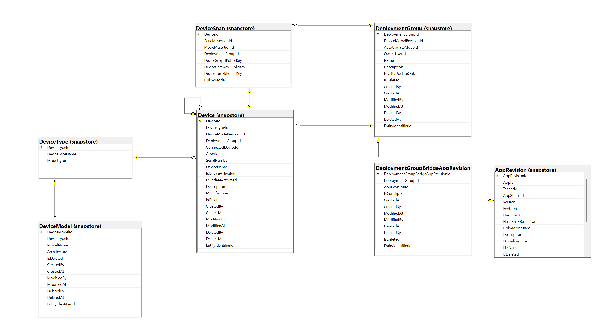
Unified Operations:
All core operations—such as creation, update, querying, and mutation—are implemented in a unified way for all device and app types, including their revisions. This ensures a consistent API and management experience, regardless of the specific type or category.
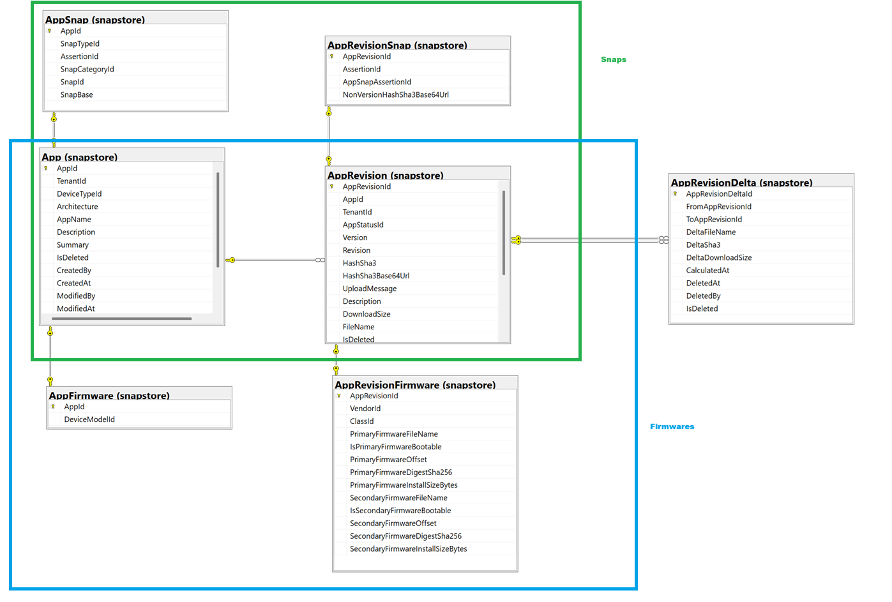
Deployment Groups and Update Management
Deployment Groups:
Devices are organized into deployment groups to streamline software management and updates. The App Store Service ensures that all devices within a deployment group follow the same update policies and that their operating systems are aligned in terms of model, revision, and architecture.Coordinated Updates:
By managing software assignments and update policies at the deployment group level, the service guarantees consistency and compliance across all devices in a group.
Uplink Provisioning and RPC Orchestration
Uplink Connection Strings:
The App Store Service generates and provides uplink connection strings to devices, enabling secure and authenticated communication with the backend (e.g., via SignalR Hub or IoT Hub).RPC Orchestration: It acts as the orchestrator for cloud-to-device Remote Procedure Call (RPC) commands, managing the full lifecycle of command delivery, execution, and response routing between backend services and devices.
Extensibility and Metadata
Dynamic Metadata:
Each device or app type can define and store additional metadata as needed. This supports extensibility for new hardware, software, or integration scenarios without impacting existing functionality.
Ecosystem Integration
The App Store Service is tightly integrated with key components of the ecosystem:
Azure IoT Hub and SignalR Hub:
The service supports both Azure IoT Hub and SignalR Hub as uplink options for device connectivity, enabling flexible and scalable device communication.User Service and Centralized Authorization:
It works closely with the User Service, leveraging a centralized authorization mechanism to ensure secure access control for all operations.GraphQL API via Gateway Service:
All core functionalities are exposed through a GraphQL schema, which is integrated with the Gateway Service. This allows for easy extension and aggregation with other services, such as the Asset Service, providing a unified API surface for clients.REST Endpoints:
The App Store Service exposes two categories of REST endpoints:Read Endpoints: Designed for customer business applications to fetch and synchronize device and software data.
Device Endpoints: Used by device-side components (such as snapd) to retrieve updates and perform device-specific operations.
This integration ensures the App Store Service acts as a central orchestrator for device, software, and update management, while providing secure, extensible, and interoperable APIs for both internal and external consumers.
Performance
The App Store Service is designed for high availability and responsiveness, supporting large-scale IoT deployments. All core operations—including device and software management, deployment group updates, and RPC orchestration—are implemented using asynchronous processing patterns to maximize throughput and minimize latency.
Concurrent Operations:
The service efficiently handles a high volume of concurrent requests from both customer business applications and devices. This is achieved through stateless service design, optimized database access, and scalable API endpoints.Batch Processing:
Device update and deployment operations are processed in batches where possible, reducing overhead and ensuring consistent state across deployment groups.Optimized Data Access:
All queries and mutations are optimized for performance, with appropriate indexing and caching strategies applied at the database level to support fast lookups and updates, even as the number of devices and apps grows.Real-Time Communication:
Uplink provisioning and RPC orchestration leverage real-time messaging infrastructure (SignalR Hub or IoT Hub), ensuring low-latency command delivery and feedback between cloud and devices.API Responsiveness:
Both GraphQL and REST endpoints are designed to provide predictable response times, supporting interactive dashboards, automated device sync, and large-scale device group management scenarios.
This architecture enables the App Store Service to deliver reliable performance under demanding workloads, supporting both operational efficiency and a seamless user experience for all ecosystem participants.
Scalability
The App Store Service is designed as a stateless, horizontally scalable microservice. Multiple instances can be deployed in parallel to handle increased load, with each instance independently processing API requests, device management operations, and deployment group updates. All persistent data is stored in a centralized database, ensuring consistency and integrity across the service regardless of the number of running instances.
Stateless Architecture:
No session or state is stored locally, allowing seamless scaling by simply adding or removing service instances.Database-Centric Consistency:
All device, app, and deployment group data is managed in a central database, supporting concurrent access and updates from any service instance.API and Messaging Scalability:
Both GraphQL and REST endpoints, as well as messaging and RPC orchestration, are designed to support high concurrency and distributed processing.Integration with Scalable Infrastructure:
The service works in conjunction with scalable components such as SignalR Hub, IoT Hub, and message brokers, ensuring end-to-end scalability for device communication and orchestration.
This architecture enables the App Store Service to efficiently support large-scale IoT deployments, dynamic workloads, and future growth without architectural changes.
Security
The App Store Service enforces robust security practices across all device, user, and software management operations:
Centralized Authentication and Authorization:
All API requests are authenticated and authorized using JWT tokens issued by the User Service. This ensures that only verified users and services can access or modify resources, and all permissions are centrally managed.Role-Based Access Control:
Fine-grained access is enforced through roles and scopes, allowing precise control over which users or services can perform specific actions.Device Authentication:
Devices are authenticated using signed connection tokens generated by the App Store Service. These tokens are short-lived, cryptographically signed, and validated by downstream services (e.g., SignalR Hub), ensuring only registered and authorized devices can connect.Secure Configuration Management:
All sensitive configuration values, such as connection strings and credentials, are stored in Azure Key Vault and never hardcoded or exposed in application code or environment variables.API Surface Minimization:
Only essential endpoints are exposed. Device-specific endpoints are authenticated internally, and all other access is routed through the Gateway Service, which acts as a security boundary.Transport Security:
All communications between clients, devices, and backend services are encrypted using TLS to prevent eavesdropping and tampering.Audit Logging:
All access and mutation operations are logged for traceability and compliance, supporting security audits and incident investigations.
This security model ensures that the App Store Service protects sensitive data, enforces strict access controls, and integrates seamlessly with the broader ecosystem’s security infrastructure.
2.2.8. Assertion Service
The Assertion Service provides cryptographic signing and verification for two domains:
Snap assertions such as account-key, account, model, serial, etc.
SUIT manifests for firmware update workflows
Keys are never exposed to callers. Instead, the service performs sign and verify operations on behalf of trusted backend components using keys stored in a secure keystore (Azure Key Vault in production, or a local directory for development/testing).
Purpose and Role
Provide a minimal API to sign snap assertions with store-controlled keys.
Generate and sign SUIT manifests used for firmware delivery to Real Time Devices (RTDs).
Centralize signing while keeping private keys out of application code and out of transit.
The service is stateless and designed to be called by internal backend services (e.g., App Store Service). It is not exposed to end users or devices directly.
Security
The service is intended to be not exposed directly to the public internet.
Authentication: all non-health endpoints require a shared secret in the
Authorizationheader that exactly equals the configured secret (no Bearer prefix). Additionally, callers must set anX-Task-Idheader for request correlation.Missing/invalid
Authorization→ HTTP 401Missing
X-Task-Id→ HTTP 400
Key handling: private keys never leave the keystore. Signing operations load keys in-memory for the cryptographic operation only. Verification accepts either a store key (by name) or a provided device public key.
Transport: endpoints are expected to be served over TLS in production
Configuration
Environment variables:
ASSERTION_SVC_SECRET(required) — Shared secret for API access. Minimum length: 20 characters.SERVICE_URL(required) — External base URL under which the service is reachable. Used for startup readiness checks.SERVICE_PORT(optional, default:80) — Port the HTTP server binds to.KEY_STORE_AZURE(mutually exclusive withKEY_STORE_LOCAL) — Azure Key Vault URL, e.g.https://kv-as3-<proj>-<stage>-<region>.vault.azure.net/.KEY_STORE_LOCAL(mutually exclusive withKEY_STORE_AZURE) — Filesystem directory containing secrets for development/testing.APPLICATIONINSIGHTS_CONNECTION_STRING(optional) — If set, logs are forwarded to Azure Application Insights; otherwise logs go to stdout only.
Key naming conventions in the keystore:
Snap store signing keys:
snapstore-key-root,snapstore-key-store,snapstore-key-modelsPOST /keys/initwill generate any missing keys.
SUIT manifest signing keys:
suit-manifest-signing-<type>-private-key
Performance
Stateless HTTP service implemented in Go using the
chirouter; request handling is synchronous and lightweight.Request logging captures method, URL, and (for JSON content types) the request body; non-JSON payloads are redacted to avoid leaking binary data.
Startup waits for the service to become reachable at
/versionbefore reporting healthy, improving orchestration reliability.
Scalability
The service is stateless and can be scaled horizontally. Each instance maintains no shared state.
Keystore access is externalized (Azure Key Vault) or file-based for development.
Maintainability
Configuration is 100% environment-driven; no local config files are required in containers.
Logs include a correlation ID (
X-Task-Id) and an action tag (api:/<path>).The codebase provides unit tests for API handlers and keystore logic to guard core behaviors.
Auditability
Warning
Application Insights logging for the Assertion Service is currently not working. Retrieve logs directly from the service console until this is resolved.
All requests (except
/health) require and log aX-Task-Idcorrelation ID.Errors include structured messages to support triage. Panics are captured and returned as 500 responses while preserving log context.
Endpoint Overview
All endpoints are HTTP. Unless stated otherwise, access requires a shared secret (see Security).
Method |
Path |
Description |
Auth |
|---|---|---|---|
GET |
|
Liveness probe. Returns |
None |
GET |
|
Returns version/build metadata and current UTC time. |
Secret + Task-Id |
GET |
|
Returns the key ID for a named signing key. |
Secret + Task-Id |
GET |
|
Returns the encoded public key for a named signing key. |
Secret + Task-Id |
POST |
|
Generates one missing GPG key and stores it in the keystore. |
Secret + Task-Id |
POST |
|
Generates all missing GPG keys required by the store. |
Secret + Task-Id |
POST |
|
Signs a base64-encoded JSON snap assertion with the given key. |
Secret + Task-Id |
POST |
|
Verifies a snap assertion with a store key or a device key. |
Secret + Task-Id |
POST |
|
Creates an unsigned SUIT manifest from a JSON definition. |
Secret + Task-Id |
POST |
|
Creates and signs a SUIT manifest. |
Secret + Task-Id |
Request/response formats (high level):
GET
/key/{keyName}/id→{ "id": "<key id>" }GET
/key/{keyName}/public-key→{ "publicKey": "<encoded public key>" }POST
/key/{keyName}/init→{ "name": "<keyName>", "id": "<key id>", "publicKey": "<encoded>" }POST
/keys/init→{ "message": "Generated keys: snapstore-key-root, ..." }or “No missing keys…”POST
/sign(body){ "signingKeyName": "snapstore-key-store", "statement": "<base64-encoded JSON assertion>" }
Response: raw signed assertion (YAML) as text.
POST
/verify(body){ "assertion": "<YAML assertion>", "signingKeyName": "snapstore-key-store" // or // "deviceKey": "<public device key>" }
→
{ "valid": true|false, "message": "..." }POST
/suit/manifest(body){ "manifestJsonBase64": "<base64-encoded JSON definition>" }
→
{ "manifestBase64": "<base64-encoded manifest>" }POST
/suit/manifest/signed(body){ "manifestJsonBase64": "<base64-encoded JSON>", "signingKeyType": "development" // or production }
→
{ "signedManifestBase64": "<base64-encoded signed manifest>" }
Notes:
For
/suit/manifest/signed, the service expandssigningKeyTypeto the actual secret name pattern:suit-manifest-signing-<type>-private-key.For
/sign, the inputstatementmust be a base64-encoded JSON assertion; the response is the signed assertion in canonical YAML (snapd asserts format).
An example of signing a snap assertion is depicted in the following diagram:
{kind=link}
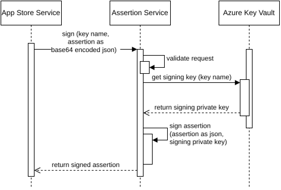
2.2.9. SSH Relay Service
The SSH Relay Service provides secure, on‑demand, short‑lived reverse SSH connectivity to edge devices that are otherwise unreachable (e.g., behind NAT or firewalls). It acts as an orchestration layer that brokers a temporary relay endpoint, instructs the target device to establish an outbound reverse tunnel, and exposes stable connection parameters (IP, ports, username) to authorized platform components or tooling.
Its primary purpose is to enable controlled remote diagnostics, maintenance, and interactive access without permanently exposing devices or requiring inbound network openings.
A core capability is lifecycle management of ephemeral relay “instances” (e.g., containerized SSH endpoints) including allocation, readiness tracking, health introspection, and automated cleanup of stale or failed sessions.
Improvement Opportunity:
Current authorization is based on an API key boundary. Future enhancements could include per-user scoped tokens, device-level RBAC enforcement, stronger session ownership checks, time/bandwidth quotas, cryptographic session attestation, and richer audit trails (command transcript hooks or signed session manifests).
Purpose and Role
The SSH Relay Service is a focused infrastructure tool that enables temporary remote access tunnels initiated from the device outward. It integrates with higher-level services (e.g., App Store / RPC flows) which request or monitor sessions. It does not own user identity or device inventory; instead it consumes validated inputs and returns actionable connection metadata.
Key responsibilities include:
• Session Orchestration: Start reverse SSH sessions via a dedicated start endpoint and expose session readiness/status via a status endpoint.
• Ephemeral Resource Management: Provision, configure, and recycle relay instances; clean up abandoned or expired sessions using a background task.
• Secure Exposure of Connection Details: Provide only the minimal connection tuple (IP, reverse SSH port, optional auxiliary HTTP port, username) when ready.
• Health & Introspection: Track container/instance state, timestamps, and health signals for troubleshooting.
• Integration Support: Act as a backend primitive used by platform services that abstract remote operations (e.g., RPC execution, diagnostics tooling).
• Observability: Emit structured logs and telemetry (Application Insights) for performance and operational monitoring.
Reverse SSH Session Management
A reverse SSH session allows a user (through platform tooling) to connect to a relay-facing endpoint while the device maintains an outbound SSH tunnel back to the relay. The relay multiplexes this link, enabling secure traversal of restrictive networks.
Key Concepts:
• Start Request (SshStartInput): Triggers provisioning. Likely includes a target device identifier and optional TTL or correlation/task identifiers (internal contract).
• Start Response (SshStartOutput): Returns a task/session identifier and preliminary metadata. A session may not be immediately ready.
• Status Poll (SshStatusOutput): Provides readiness plus connection tuple:
• IsReady: Indicates the user can now initiate SSH.
• IpAddress / ReverseSshPort: Public host and port the operator connects to.
• RemoteSshPort: Port inside the relay/device mapping (if exposed).
• HttpPort: Optional auxiliary HTTP/debug port (set via container config).
• UserName: SSH login name.
• Debug: Deep diagnostics (instance/container status, timestamps, health).
• Instance Utility: Adjusts runtime parameters (e.g., HTTP port override from CONTAINER_HTTP_PORT) to unify externally published ports.
• Cleanup Background Task: Periodically scans and tears down stale or completed sessions to reclaim resources and prevent drift.
Workflow
As described before, the Device never exposes open SSH ports to the outside. For Reverse-SSH, a Reverse-SSH server is used. It is a virtual machine running a specially configured sshd daemon, which can be configured to connect two incoming SSH connections (A->R and B->R) to construct a tunneled connection from A to B (see: SSH tunneling). This technique allows creating a SSH connection to a Device that doesn’t expose any ports. The Device never exposes open SSH ports to the outside. Reverse-SSH is only activated when explicitly requested by RPC call from an authenticated source. When m2cp-gateway receives a Reverse-SSH request via RPC-call, SSH is used to establish a connection to the Reverse-SSH server.
A reverse-ssh session is created as follows:
{kind=link}
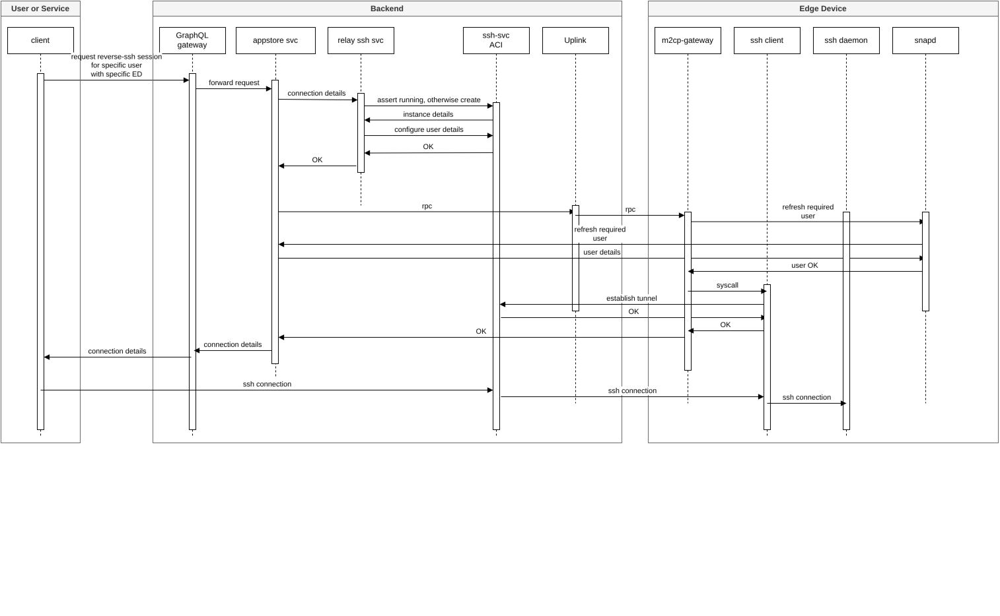
Client wants to initiate a Reverse-SSH connection with a specific Edge Device (ED). Client sends the request as a GraphQL call to the Backend
The gateway forwards that request to the responsible service, which is the Appstore Service.
The Appstore service checks, if the user is authorized for this connection, gathers the required details (ED serial, ED SSH public key, user public key) and sends those to the Relay SSH service via REST. This request is secured using a shared secret known ownly to the Appstore service and the relay SSH service.
Relay SSH service manages the container instances for individual Reverse-SSH sessions using the Azure Resource Management SDK. It checks, if an ACI (Azure Container Instance) for the target ED already exists and creates one if not.
The Relay SSH service sends the user details (user public SSH key) to the SSH-service to authorize the user to use that specific jumphost
The Relay SSH service now has successfully prepared a jumphost for the Reverse-SSH session and hands back control to the Appstore service
The Appstore service sends an M2CP RPC message to m2cp-gateway via the uplink connecting the ED to the backend
m2cp-gateway calls snapd to fetch the details of the user from the backend (i.e. the users SSH public key) to make sure that the user is authorized to connect to the ED
m2cp-gateway starts an SSH client to connect to the jumphost (i.e. “SSH-service ACI”), if such a connection doesn’t already exist
m2cp-gateway reports the ED as being ready and the tunnel to the jumphost being alive and hands back control to the Appstore service
The Appstore service returns the connection details to the client
The client can now open a Reverse-SSH connection to the ED by tunneling through the jumphost and using the tunnel from the jumphost to the ED to finally connect to the SSH daemon on the ED
Security details of the reverse-ssh docker instances:
Alpine is used as a minimal base image
The user used for SSH is not allowed for logins, only to use the instance as a ssh jumphost
Shell Access is only possible via Azure ACI Terminal (via Azure Portal)
The container instance terminates when the Edge Device wasn’t connected for 3 hours
The backend terminates the container instance as soon as its lifetime reaches 12 hours
Security & Access Control
• API Key Authentication: All operational endpoints require the X-API-KEY header (except root and health). Custom auth handler enforces scheme consistency.
• Scoped Responsibility: The service intentionally avoids embedding broader RBAC or tenant logic; it trusts upstream services to gate which devices are eligible.
• Isolation: Ephemeral instances reduce long-lived attack surface; no persistent open inbound paths to devices.
• Controlled Disclosure: Only provides minimal connection details; no device secrets surfaced.
• Telemetry & Logging: Centralized logging (Application Insights) enables anomaly detection (e.g., excessive session churn).
Observability & Debug Information
The SshStatusDebug block supports rapid triage:
• InstanceStatus / ContainerStatus: Provisioning vs. running vs. terminated states.
• StartOn / FinishOn: Timing for performance and SLA baselines.
• IsHealthy: Health probe indicator to distinguish slow start vs. dead instance.
Resource Lifecycle & Cleanup
The CleanupBackgroundTask enforces session hygiene:
• Identifies expired, unhealthy, or orphaned instances.
• Triggers teardown to free compute/network resources.
• Prevents accumulation of zombie relay containers.
• Ensures status calls eventually reflect terminal state.
Integration Pattern
Other services (e.g., Appstore Service) use a client wrapper (ReverseSshServiceClient / ReverseSshSvc in the broader platform) to:
• Initiate a session only when needed (lazy access).
• Poll until readiness with backoff.
• Embed connection info into higher-level workflows (interactive debugging, remote command execution).
2.2.10. Service Bus
Is a message hub which can be used by all backend services to exchange event messages for triggering operations in other backend services. It’s publish/subscribe based.
Event API
Overview
The Event API is an integral part of the ML!PA ecosystem, providing real-time data streaming and event broadcasting functionality, allowing you to subscribe to events as e.g. users or Edge Devices being created, modified, or authenticated. While the GraphQL API allows you to fetch the current state of the system, the Event API allows to to subscribe to changes and receive updates in real time.
This is achieved through SignalR, allowing clients to connect and receive real-time updates on specific events. The event data is streamed via WebSocket connections, enabling the client to stay up-to-date with system events like user actions or system notifications.
This documentation covers the steps for setting up a SignalR Hub for event broadcasting, handling subscriptions for different event topics, and listening for events in the client application.
Flow
Connection Establishment: The first step for the listener application is to establish a WebSocket connection to the SignalR hub. This connection is protected via an API key (in this example,
access_token), ensuring that only authorized clients can connect.Subscription to Events: Once the connection is established, the client can subscribe to one or more event topics. Event topics are predefined strings representing specific system events. For example,
user/created,user/modified, etc. A specialalltopic is available, which allows the client to subscribe to all events raised in the system.Event Broadcasting: The system broadcasts events to subscribed clients. Each event includes a topic and a payload. The payload is the serialized details of the event in JSON format.
Client-Side Listener: On the client side, a delegate method is implemented to receive the event data, containing the topic name and the serialized event message (payload).
Client-Side: Listener Application
The client connects to the SignalR hub, subscribes to events, and listens for incoming messages. Below is the essential code for connecting and listening to the event hub.
var hubConnection = new HubConnectionBuilder()
.WithUrl("http://[appstore-gateway-service]/eventhub?access_token=access_token")
.Build();
On the client side, a delegate method needs to be implemented to handle incoming messages. The method should accept two parameters:
Topic Name (string topic): The event topic that triggered the message.
Message (string message): The event payload serialized in JSON format.
hubConnection.On<string, string>("ReceiveMessage", (topic, message) =>
{
Console.WriteLine($"{topic}: {message}");
});
await hubConnection.StartAsync();
await hubConnection.InvokeAsync("Subscribe", new string[] { "user/created", "user/modified" });
//await hubConnection.InvokeAsync("Subscribe", new string[] { "all" });
Topics and Payload Contract
In our system, topics follow the format “resource/event_type”, where resource refers to the entity or resource type (e.g., user, edgeDevice), and event_type refers to the action performed on that resource (e.g., created, updated, deleted).
Sample Topics:
user/created:
{
"UserId": "631f1428-fce4-410c-acd2-f62be7f204c4",
"Email": "alireza.memarian@ml-pa.com"
}
user/loggedin
{
"SessionId": "a2de3a43-d627-43c6-bfd4-e49c6cdbe89a",
"UserId": "631f1428-fce4-410c-acd2-f62be7f204c4",
"DateTime": "2024-08-01T12:56:12.000z"
}
deploymentGroup/created
{
"DeploymentGroupId": "d256e5f0-da8a-4b6b-90c3-150d32f99a68",
"DeploymentGroupName": "mlpa-dev-01",
"OwnerUserId": "631f1428-fce4-410c-acd2-f62be7f204c4"
}
2.3. User Service
The User Service is responsible for generating user authentication tokens.
A user sends a request with a JSON Web Token (JWT) token in the header, which is received by the Gateway Service. If the user is unknown, the User Service is asked for the user’s permissions. In response, the User Service generates a new JWT token, which includes permissions and is only known server/backend side. This new token is sent in the response to the Gateway Service and is cached for an hour for direct use in upcoming requests.
Alternatively a user can authenticate using his SSH-key. In that case, a user has to solve a challenge posed by the backend to prove his ownership of the key registered in his user account. If successful, a token is generated.
{kind=link}
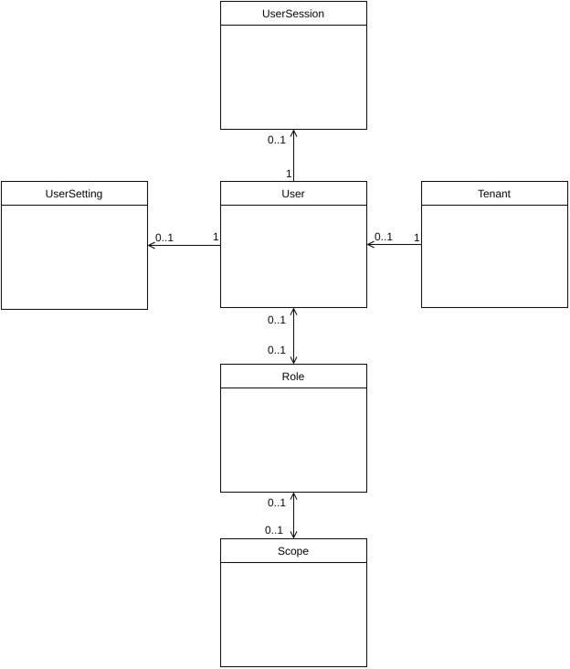
The figure above presents a simplified representation of a data model for the User. Its purpose is to provide a conceptual overview of how the various components are structured and interrelated.